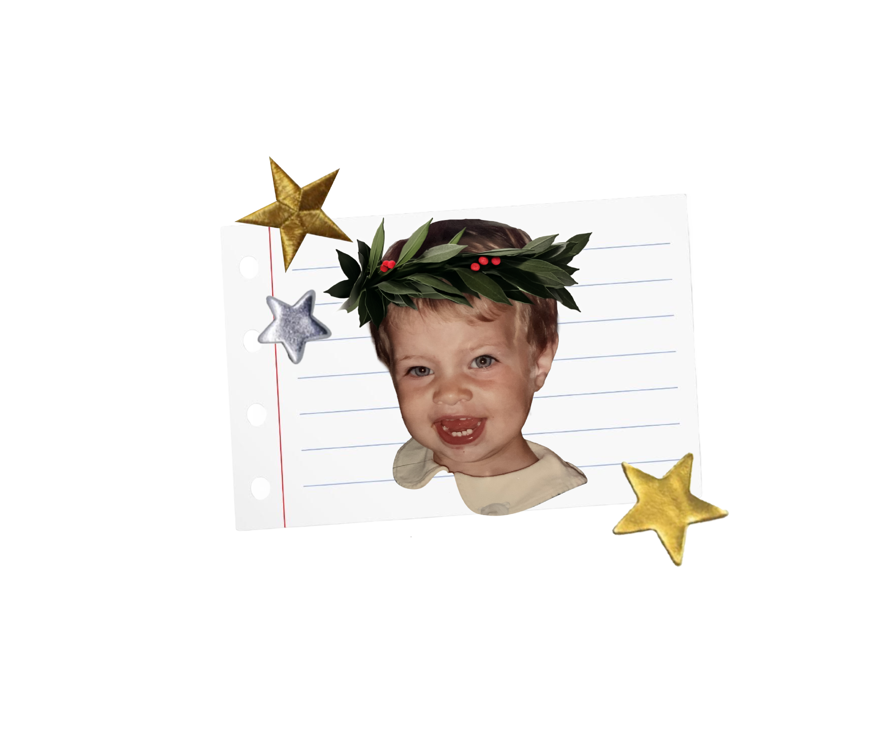

Ringraziamenti <3
Solo adesso mi rendo conto di quanto sarà difficile ringraziare, in poche righe, tutte le persone che hanno contribuito a questo traguardo. Proverò a farlo, senza l'aiuto di ChatGPT.
Non è facile iniziare da te, ci sarebbero troppe cose da dire, troppe cose che non troverebbero lo spazio e il modo giusto per essere descritte.
Grazie Mamma.
Grazie perché tutto quello che ho raggiunto fino a questo momento lo devo a te, all'amore, all'impegno, alla forza, alla cura e all'incredibile devozione che hai impiegato nell'accompagnarmi in ogni passo dal momento in cui ho messo piede su questa Terra. Grazie perché non hai mai smesso di crescere, di migliorare con me e per me. Grazie perché dove chiunque avrebbe visto un ostacolo tu hai visto un'opportunità, dove chiunque avrebbe visto una difficoltà tu hai trovato una soluzione, dove chiunque avrebbe visto nero tu hai portato la luce, dove chiunque avrebbe mollato tu, mamma, non l'hai fatto.
Grazie, perché se posso chiamare famiglia questo gruppo di persone un po' disastrate, è solo grazie a te.
Grazie zia Chicca, braccio destro e qualche volta anche quello sinistro, della mia mamma. Grazie perché hai sempre diviso il peso delle giornate più dure con noi. Grazie per la tua presenza costante, perché è stata la spinta che ci ha permesso di continuare a camminare sempre, arrivando ogni singolo giorno un po' più lontano. Ci hai aiutato a superare l'insuperabile, a trasformare la fatica in forza, fino a portarci esattamente qui: e guarda cosa siamo riuscite a fare.
Grazie Papà per essere sempre così orgoglioso di me. Grazie per aver superato ogni difficoltà per essere qui oggi a condividere quell'orgoglio anche con me.
Grazie alla mia famiglia tutta, sparsa un po' in giro per l'Italia e per l'Europa. Grazie zia Titti, Franci, zio Luca, zia Laura, Giada, Giulia, Elena e Giorgio perché nonostante la distanza, gli impegni quotidiani e gli imprevisti avete trovato il modo di essere tutti qui a festeggiare questo traguardo con me. Grazie a chi non è potuto esserci, il vostro supporto riesce a sempre a superare i chilometri che ci dividono. Grazie alla nonna Clorie, che ci guarda da lassù: sono certa che oggi sorrida, orgogliosa di vederci tutti qui insieme.
Grazie Elisa, la sorella che la vita non mi ha dato alla nascita ha trovato il modo di raggiungermi lungo il percorso. Grazie perché non ti sei mai fermata alla superficie, grazie di non esserti mai tirata indietro davanti alle difficoltà e sai bene che in questi 6 anni ce ne sono state tante. Grazie perché hai condiviso tutto con me: lacrime di gioia e di dolore, risate, debolezze, viaggi, case, libri, auto, fogli di giornale e perfino lo stesso water. Eli quante cose abbiamo fatto in questi anni, quante volte avrei potuto sentirmi sola e quante volte mi sono girata e ti ho trovata lì, a volte nella stanza a fianco, altre volte in cucina a preparare dolci buonissimi, e altre volte ancora dietro lo schermo di un telefono. So quanto la tua famiglia sia importante per te. Grazie per avermi permesso di farne parte, te ne sarò per sempre grata.
Grazie Marco che dopo tutti questi anni ancora riesce a sopportare la mia follia. Grazie per l'ascolto e la pazienza inesauribile, per avermi fatto conoscere la felicità di vedere nascere due piccole anime e grazie di trovare sempre il tempo per continuare a crescere insieme.
Grazie Porsy per aver portato il cielo sereno nel caos di Roma. Grazie per avermi ricordato quanto la vita possa essere sorprendente anche quando ti sembra di non avere niente. Grazie per aver condiviso l'ultimo pezzo di strada, la salita prima del traguardo, con me. Grazie per l'innata cura che hai verso gli altri, e per aver dato voce ai miei silenzi senza chiederne mai il conto. Grazie perché il regalo più grande che mi hai fatto è credere di nuovo che, per me, non esistono traguardi irraggiungibili.
Grazie Chiara e Sara, perché la vostra ambizione mi stimola a fare sempre di meglio. Grazie perché nella vostra compagnia ho trovato il supporto e la leggerezza di cui avevo bisogno per non cedere il passo alla fatica. Siete l'equilibrio tra l'ispirazione che ti fa crescere e un'amicizia vera che ti fa sentire protetta.
Grazie ai miei amici Serena, Mattia, Giada, Davide e Silvia. Abbiamo condiviso la fatica di questo percorso dal primo giorno ma solo alla fine ci siamo resi davvero conto di quanto tutto sarebbe stato più facile condividendo il carico. Grazie perché siete stati la più bella scoperta di questo viaggio. Non sarebbe stato lo stesso senza di voi.
Grazie ai miei amici. Ognuno di voi, in tutti questi anni, mi ha lasciato un pezzetto di sé. Tutto quello che abbiamo condiviso mi ha portato qui, grazie di esserci sempre.
Infine, non posso non dedicare un pensiero a te. A te che te ne sei andato troppo presto per poter vivere questo giorno, a te a cui ho dedicato ogni singolo esame e ogni mia giornata a partire da quel 3 febbraio. Ti devo dire grazie, perché è stato solo scontrandomi con la tua assenza che ho scoperto quanta forza nascondevo dentro di me.
Grazie perché, perfino andandotene, hai continuato a darmi tanto: hai riportato alla luce rapporti nascosti, mi hai ridato la mia Giulia, mi hai portato a Malaga per la prima volta, hai incrociato il mio cammino con quello di persone meravigliose.
Mi hai protetta, e hai insegnato a noi che siamo rimasti come prenderci cura l'uno dell'altro.
Grazie perché, nell'impossibilità di accettare ciò che è successo, ti sento ovunque. Soprattutto qui, e soprattutto oggi. Grazie Zio Army. Perché se c'è qualcosa che non so, la prima persona a cui vorrei chiederlo rimani sempre tu.
21 / 10 / 2026
Grazie a tutti.
